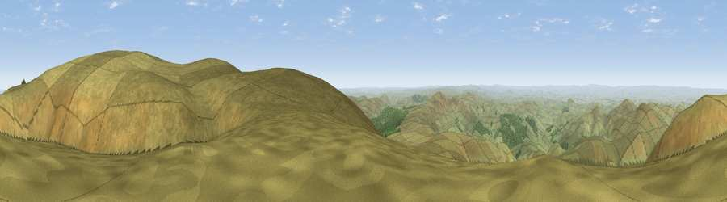

Viewpoint c12396_7782
#1744 in England · top 8% of its area beats it · —The view, rendered

A 360° render of this exact spot computed from the terrain model, tree cover and land cover — summer colours, afternoon light, calibrated against photographs of famous viewpoints. Real trees, hedges and buildings will differ in detail.
The panorama
Grey silhouette: terrain skyline in each direction (720 bearings, Earth curvature and refraction included). Dashed green: skyline with trees (+15 m) and buildings (+8 m) as obstacles. Blue strip: how far the ground is visible on each bearing.
Where the view opens
Wedge length = distance to the farthest visible ground on that bearing (vegetation-aware). Rings at 10, 25 and 50 km.
What fills the view
92% grassland · 5% woodland · 2% cropland
Angular shares of the visible panorama (visual magnitude), not map area. Landscape diversity 0.14 (0–1 Shannon).
Key numbers
More beautiful places nearby
The staircase of upgrades: each row has a higher view potential than everything closer. Driving times are estimates from straight-line distance, calibrated against real road routing — check an actual route before setting out.
| Place | Direction | Drive | Score |
|---|---|---|---|
| Viewpoint c12386_7791 | SSE · 1 km | ~3 min | 80.8 |
| West Hill | N · 2 km | ~4 min | 81.3 |
| Viewpoint c12415_7827 | ENE · 2 km | ~6 min | 83.3 |
| Viewpoint c12396_7887 | E · 6 km | ~12 min | 85.7 |
| Viewpoint near Kirknewton | NNE · 10 km | ~20 min | 86.1 |
| Viewpoint near Chillingham | ENE · 20 km | ~34 min | 88.1 |
| Ullock Pike | SW · 112 km | ~136 min | 89.4 |
| Long Side | SW · 112 km | ~136 min | 89.5 |
55.47213, -2.17437 · source: screening · position refined by local search. Computed location — check access rights before visiting.